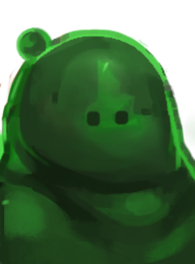
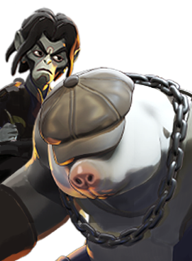
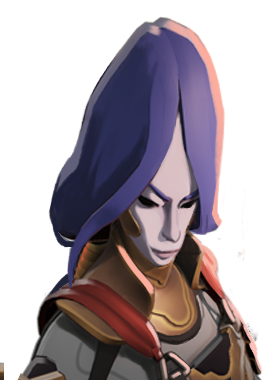
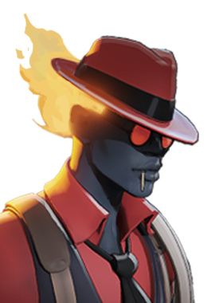

Atiradora de longo alcance, pune erros de posicionamento.
História
Vítima de John Hathorne durante os Julgamentos das Bruxas de Salem, Vindicta teve uma segunda chance de vida quando seu espírito foi trazido de volta ao plano mortal durante o primeiro Maelstrom (o evento que apresentou o sobrenatural ao público em geral).
Travando uma guerra fantasma contra "Os Amigos da Humanidade", uma neoinquisição formada pelos descendentes de Hathorne; Vindicta procura manter o sobrenatural a salvo da turma de Hathorne, e ela não tem medo de empilhar quantos corpos forem necessários para isso.
História oficial do jogo, traduzida automaticamente para o português.
Números reais
Habilidades
Lança uma estaca que prende inimigos ao local onde ela cai, limitando o movimento ao comprimento da corrente.
Salta e voa, dando à arma dano espiritual bônus e maior alcance de itens enquanto está no ar.
Envia um corvo que causa dano de impacto, reduz a resistência a balas e espiritual do alvo e aplica sangramento baseado na vida atual dele.
Dispara um tiro de sniper de longo alcance com mira que causa dano extra a inimigos abaixo de 50% de vida.
Builds mais usadas
5.114 partidas registradas com esta build.
🏆 Rodadas de alta velocidade (800) · 🏆 Rodadas de Abertura (1.600) · 🏆 Espírito Extra (800) · 🏆 Espírito Melhorado (1.600) · 🏆 Taxa Extra (800) · 🏆 Recarga rápida (3.200) · 🏆 Velocidade duradoura (1.600) · 🏆 Longo alcance (1.600) · 🏆 Atacante Rápido (1.600) · 🏆 Contrafeitiço (3.200)
3.718 partidas registradas com esta build.
Rodadas de alta velocidade (800) · Rodadas de Abertura (1.600) · Espírito Extra (800) · Espírito Melhorado (1.600) · Taxa Extra (800) · Botas de corrida (800) · Recarga rápida (3.200) · Longo alcance (1.600) · Velocidade duradoura (1.600) · Atacante Rápido (1.600)
3.385 partidas registradas com esta build.
Rodadas de alta velocidade (800) · Rodadas de Abertura (1.600) · Recarga Mercúrio (1.600) · Taxa Extra (800) · Recarga rápida (3.200) · Colecionador de Troféus (1.600) · Pedra de Urdidura (3.200) · Grão (800) · Rito de Cura (800) · Refutação (800)
Confrontos reais
 Deadman Danny — 58.6% de vitória
Deadman Danny — 58.6% de vitória Pocket — 56.1% de vitória
Pocket — 56.1% de vitória Shiv — 55.8% de vitória
Shiv — 55.8% de vitória Mirage — 55.4% de vitória
Mirage — 55.4% de vitória Solomon — 55.2% de vitória
Solomon — 55.2% de vitória
Viscous — 54.6% de vitória
 Graves — 43.3% de vitória
Graves — 43.3% de vitória Paige — 43.6% de vitória
Paige — 43.6% de vitória Rat King — 43.9% de vitória
Rat King — 43.9% de vitória Kelvin — 45.5% de vitória
Kelvin — 45.5% de vitória Seven — 45.8% de vitória
Seven — 45.8% de vitória Haze — 46.0% de vitória
Haze — 46.0% de vitória
O que upar primeiro
Nível por nível, na ordem que os jogadores mais usam em partidas de verdade. A porcentagem mostra quantos escolheram aquela habilidade naquele nível.
Melhores duplas
Heróis que mais ganham jogando junto com ele, em partidas reais (pelo menos 1.500 partidas juntos).
- Rat King59,1%
- Graves56,7%
- Paige56,4%
 Victor55,8%
Victor55,8%- Haze54,6%
- Deadman Danny42,1%
- Mirage43,8%
 Grey Talon44,1%
Grey Talon44,1%
Rota (lane)
Na rota, cada lado joga em dupla. Estes números são de confrontos reais: a diferença de almas é medida com o jogo já começado, então almas no verde significa que ele costuma estar na frente.
- Graves — 41,5% de vitória +42 almas (703 partidas)
- Rat King — 42,7% de vitória −313 almas (4.273 partidas)
- Paige — 43,6% de vitória −71 almas (289 partidas)
- Haze — 45,0% de vitória −388 almas (5.182 partidas)
- Victor — 46,8% de vitória +813 almas (158 partidas)

Mo & Krill — 47,7% de vitória −767 almas (243 partidas)
Yamato — 47,8% de vitória −189 almas (289 partidas) Lash — 48,1% de vitória −150 almas (865 partidas)
Lash — 48,1% de vitória −150 almas (865 partidas)

Infernus — 60,5% de vitória +251 almas (167 partidas)- Shiv — 56,6% de vitória +250 almas (221 partidas)
 Drifter — 55,4% de vitória +354 almas (224 partidas)
Drifter — 55,4% de vitória +354 almas (224 partidas)
Histórico de win rate
07/09: 44.6% → 26/10: 46.4% → 14/12: 46.9% → 01/02: 46.4% → 22/03: 47.9% → 10/05: 48.1% → 28/06: 49.6% → 16/08: 51.3% → 04/10: 49.7%